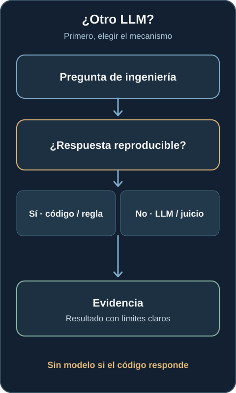
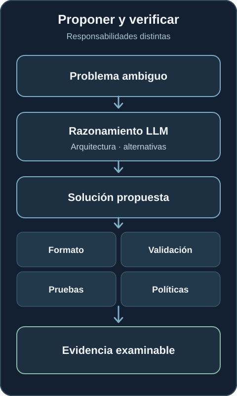
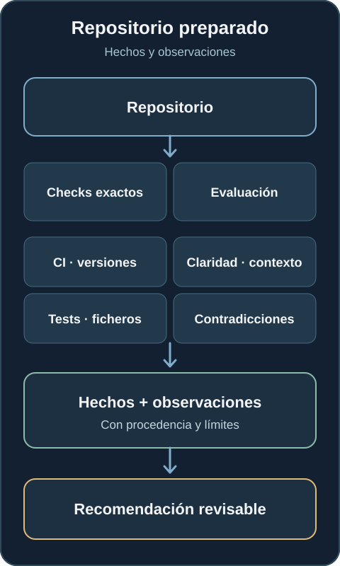
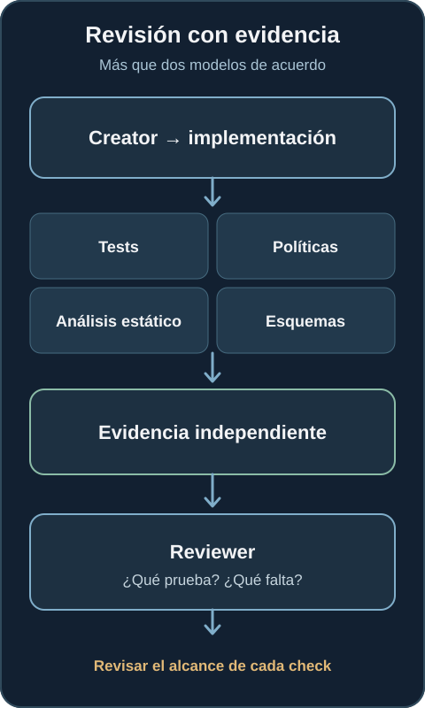
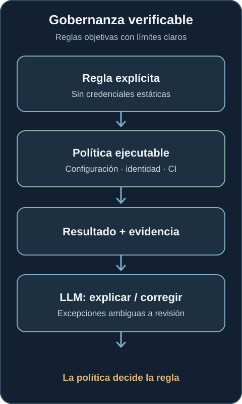
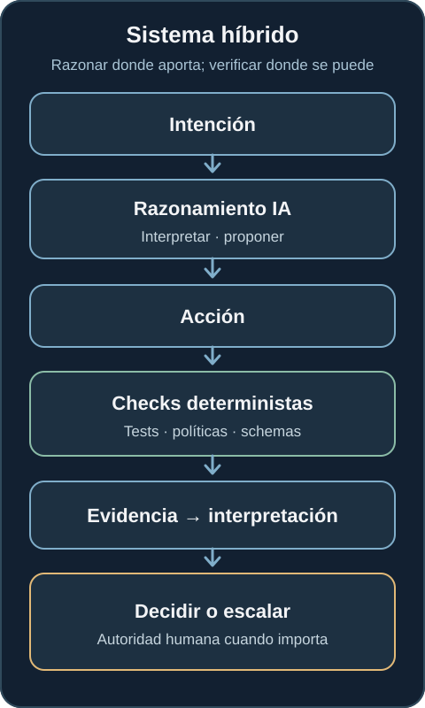

¿Por qué no todo problema de AI Engineering necesita otro LLM?
Los modelos ayudan ante la ambigüedad. Las pruebas, las políticas y el software convencional deben seguir respondiendo las preguntas que tienen una respuesta reproducible.
Cuando introducimos IA en procesos de ingeniería aparece una tentación natural: si un LLM puede razonar sobre código, infraestructura, documentación y operaciones, ¿por qué no dejar que también valide todo?
Podríamos pedirle que compruebe si existe un fichero, si una versión está fijada, si pasó una pipeline, si se cumple una política o si un requisito tiene evidencia. Incluso podríamos pedirle a otro agente que revise al primero. Técnicamente podemos hacerlo. ¿Deberíamos?
Una de las decisiones más importantes al diseñar AI Engineering no es qué modelo utilizar. Es qué problemas deben seguir resolviéndose sin ningún modelo.
El problema de convertir certezas en probabilidades
Supongamos que la pregunta es: ¿existe SECURITY.md en este repositorio? Una comprobación del fichero devuelve un sí o un no reproducible. No necesita interpretación, creatividad ni inferencia.
Ahora pidamos a un modelo que inspeccione el repositorio y decida si tiene una política de seguridad bien definida. Esa es otra pregunta, más amplia. Si el requisito era únicamente determinar si el fichero existe, hemos sustituido una comprobación exacta por una respuesta probabilística y añadido tokens, latencia, coste, variabilidad y una auditoría más difícil.
No conviene confundir las dos preguntas. Que exista SECURITY.md no demuestra que la política sea buena. Pero pedirle a un LLM que determine si existe tampoco mejora la comprobación de su existencia.

La primera pregunta debería ser: ¿podemos determinar este resultado de forma reproducible sin razonamiento probabilístico? Si es así, normalmente corresponde hacerlo con software convencional.
Dónde aportan valor los modelos
Esto no reduce el papel de la IA. La orienta hacia el trabajo que necesita interpretación: información incompleta, contexto distribuido, síntesis de documentación, trade-offs, contradicciones semánticas, intención e hipótesis.
Pensemos en otra pregunta: ¿encaja la arquitectura propuesta con los requisitos de disponibilidad, coste y aislamiento entre tenants? Hay que relacionar requisitos, arquitectura, restricciones y contexto. Puede haber varias respuestas defendibles. Un modelo puede hacer explícitas las suposiciones, comparar alternativas e identificar preguntas para la revisión.
Esa salida es una evaluación, no una demostración. Debería indicar qué evidencia utilizó, qué sigue siendo incierto y qué decisiones necesitan una persona.
El resultado puede seguir verificándose de forma determinista
Un agente puede utilizar un LLM para razonar sobre arquitectura de infraestructura, resiliencia, seguridad y coste. Una vez genera Terraform, distintas herramientas pueden comprobar distintas propiedades:
terraform fmt -check → formato
terraform validate → sintaxis y coherencia interna
tflint → reglas de lint y del proveedor
checkov → políticas IaC configuradas
tests / policy checks → requisitos del proyecto
Estas comprobaciones no demuestran que la arquitectura sea buena. En particular, terraform validate no inspecciona el estado real del proveedor. Sí producen evidencia examinable sobre las propiedades que cubren. Distinguir entre lo que una comprobación demuestra y lo que no demuestra también es trabajo de ingeniería. La documentación de Terraform deja claro ese límite.

El patrón útil es: la IA propone; el software verifica todo lo que pueda verificarse objetivamente; las personas conservan la autoridad sobre los juicios importantes.
Razonar y verificar son responsabilidades diferentes
Un agente no tiene por qué ser simplemente un LLM conectado a herramientas. Puede decidir qué comprobación es relevante, ejecutar la herramienta adecuada, leer el resultado y decidir si continúa, revisa o escala.
El modelo puede elegir una prueba. El resultado debe venir del ejecutor de pruebas. Puede interpretar una violación de política. Si la regla es explícita y verificable, la decisión de cumplimiento debe venir del motor de políticas.
Esta separación mejora el diagnóstico. Permite distinguir si el modelo juzgó mal, utilizó la herramienta incorrecta, omitió una comprobación o comunicó correctamente un fallo. Son modos de fallo diferentes.
Repository readiness necesita ambos tipos de evaluación
Imaginemos que queremos saber si un repositorio está preparado para trabajar con agentes. Un estándar inicial podría exigir instrucciones estables, comandos de validación, versiones críticas fijadas, CI, ownership conocido, documentación arquitectónica y pruebas ejecutables.
Varias preguntas son directas: ¿existe el fichero de instrucciones? ¿Está fijada una versión? ¿Existe CI? ¿Se pueden ejecutar los tests? ¿Está presente la configuración requerida? El software puede responderlas y conservar como evidencia el resultado, el comando y la versión.
Otras preguntas requieren juicio: ¿son suficientemente claras las instrucciones para esta tarea? ¿La documentación arquitectónica contradice la implementación? ¿Hay ambigüedad en las responsabilidades? ¿La estrategia de validación corresponde al riesgo? Un modelo puede ayudar a examinarlas, siempre que sus observaciones sigan diferenciándose de los hechos medidos.

Un resultado útil podría ser:
✓ CI configurado hecho: workflow encontrado
✓ tests ejecutables hecho: comando superado
✓ versiones críticas fijadas hecho: lockfile comprobado
△ guía arquitectónica escasa observación: revisión sugerida
! ownership poco claro observación: aclaración humana
— perfil de seguridad no aplicable, con motivo registrado
Es más accionable que «sí, el repositorio parece preparado». También evita que un porcentaje de preparación oculte la incertidumbre.
Otro LLM no es automáticamente un revisor independiente
Un modelo creador seguido de otro revisor puede ser útil. El segundo puede detectar un problema que el primero pasó por alto. Pero que dos modelos estén de acuerdo no constituye automáticamente una confirmación independiente. Pueden compartir patrones aprendidos, contexto o la misma interpretación errónea de una especificación.
El revisor aporta más cuando puede examinar evidencia ajena al razonamiento del creador: pruebas, esquemas, análisis estático, resultados de políticas, comprobaciones en ejecución y fuentes originales. Puede preguntar ¿qué demuestra la evidencia? y ¿qué queda sin probar?, en lugar de limitarse a ¿estoy de acuerdo con el primer modelo?

La propia evidencia también necesita examen. Una prueba que pasa puede cubrir el comportamiento equivocado. Una regla puede tener puntos ciegos. El revisor debe considerar el alcance de los controles, no tratar cada resultado verde como una demostración completa.
La gobernanza tampoco debería ser probabilística por defecto
Tomemos una política explícita: los workloads de producción no deben utilizar credenciales estáticas. Si la configuración relevante es estructurada y visible, apliquemos la regla mediante policy as code, controles de identidad, análisis estático y comprobaciones de despliegue. Un LLM puede explicar una violación, proponer una corrección o investigar una excepción ambigua. No tiene que convertirse en la autoridad que decide si pasa una regla objetiva.

Una política ejecutable resulta más fácil de repetir y auditar, pero solo dentro de su cobertura. La configuración ausente, las dependencias no declaradas y los huecos en las reglas siguen necesitando revisión. El enforcement determinista es una base para la gobernanza, no una garantía de que todo el sistema sea seguro.
Deterministic first no significa deterministic only
Algunas preguntas resisten una regla booleana: ¿es innecesariamente compleja la arquitectura? ¿Explican los ADR los trade-offs? ¿Está el cambio alineado con la intención del producto? ¿Qué acoplamiento o fallo no hemos considerado?
Las métricas y las reglas pueden ayudar, pero el juicio sigue siendo necesario. El principio es determinista cuando sea posible, probabilístico cuando aporte valor. Un modelo debería consumir evidencia, identificar vacíos y ayudar a decidir qué investigar después, en vez de sustituir la evidencia por una frase convincente.

La separación práctica es sencilla. Utilicemos software convencional cuando la pregunta sea ¿existe, coincide, pasó, cumple esta regla explícita o se puede reproducir? Consideremos IA cuando la pregunta sea ¿qué significa, qué alternativas hay, qué contexto falta o qué deberíamos investigar después?
Un camino produce hechos comprobables. El otro produce razonamiento. Un proceso de ingeniería fiable necesita ambos y los mantiene identificados.
Hay una razón económica y otra de fiabilidad
Una llamada al modelo para comprobar un fichero puede parecer insignificante. Si se ejecuta miles de veces entre repositorios, jobs de CI y agentes, los tokens, la latencia y la atención se acumulan. AI FinOps empieza con una decisión sencilla: no pagar por razonamiento del modelo donde una comprobación barata y fiable responde la pregunta.
El argumento de fiabilidad es todavía más importante. Una comprobación de versión fijada debería devolver el mismo resultado con la misma entrada. Convertirla en un juicio del modelo añade incertidumbre que no hacía falta. Los modelos son valiosos porque pueden trabajar con ambigüedad; no necesitamos volver ambiguas las partes que ya tenían una respuesta exacta.
La arquitectura importa más que el número de agentes
Un sistema con Planner, Architect, Developer, Reviewer, Security Agent y FinOps Agent puede seguir siendo una cadena de conjeturas probabilísticas. Más agentes no equivalen necesariamente a más control.
Un patrón más sólido conecta razonamiento → acción → evidencia determinista → interpretación → decisión o escalado humano. La inteligencia se reparte entre el modelo, las herramientas, los controles, los contratos y las personas. Importa qué partes admiten variación y cuáles deben ser reproducibles.
Esto conecta con una pregunta más amplia que traté al escribir sobre qué ocurre cuando la adopción de agentes supera a su gobernanza: los agentes necesitan estándares y capacidades consumibles, además de formas de demostrar que los aplicaron. También complementa la reflexión sobre entrega trazable con agentes: un registro de entrega es más sólido cuando su evidencia procede de comprobaciones independientes.
Quizá el agente más útil sea el que sabe cuándo no necesita razonar desde cero: cuándo llamar a una herramienta, ejecutar una prueba, consultar una fuente autoritativa, aplicar una política, esperar evidencia o preguntar a una persona.
Al diseñar AI Engineering, una pregunta productiva no es solo ¿qué otro agente podemos añadir? Es ¿qué parte de este problema no debería necesitar un LLM en absoluto?